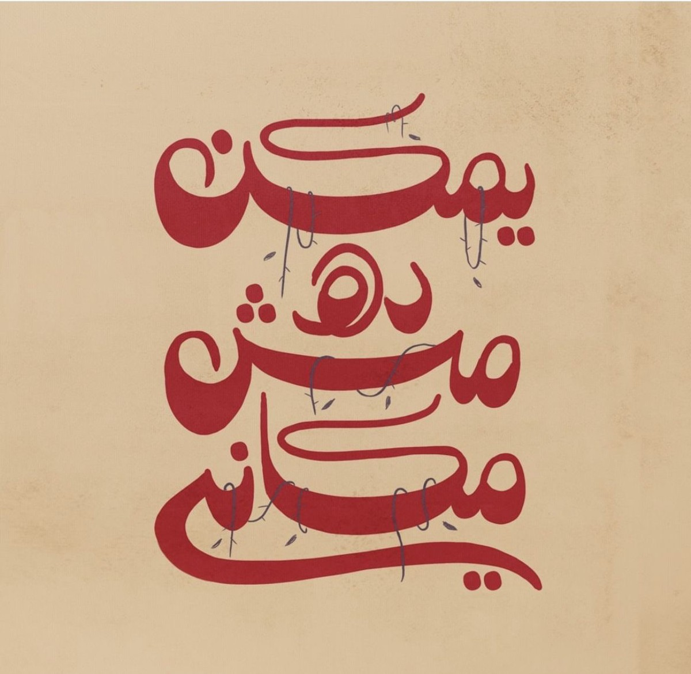

Big-picture thinking that connects image, movement, styling, and message.

Creative Direction
Sharp, visionary, and image-led.
Creative direction is where Badra’s eye becomes the product: concept systems, image worlds, styling logic, and artistic decisions that need a stronger point of view.
Visual frameworks for campaigns, editorial shoots, launch ideas, and premium narratives.
Direction for launches, objects, and beauty or fashion-facing extensions of the brand.

Where it applies
Direction with a sharper edge.
This route is for clients who need more than performance. They need a visual brain, a clearer concept, and an image structure that can hold together across touchpoints.
Best for campaigns, content systems, product launches, and visual world-building.